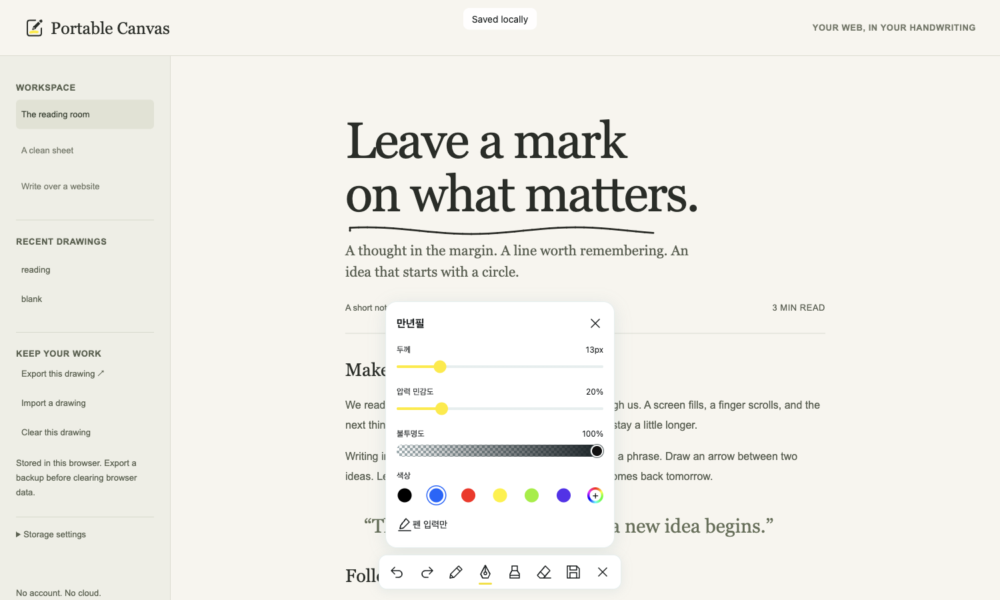
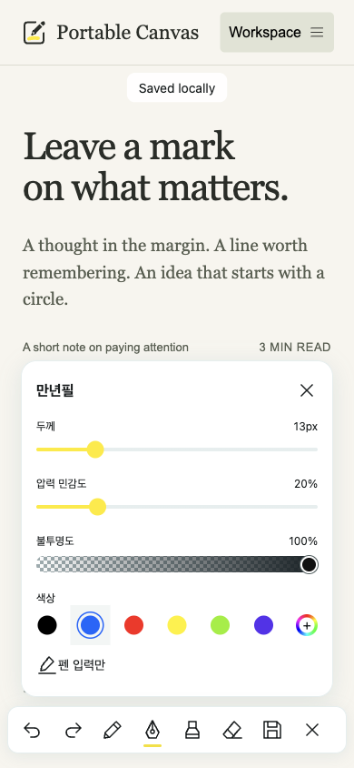

웹 페이지 위에 얹는 드로잉 레이어
읽던 페이지 위에
그대로 적어 두세요.
평소에는 작은 펜 아이콘 하나만 보입니다. 누르면 Apple Pencil, Android 스타일러스, 손가락, 마우스로 페이지 위에 쓰고, 그린 내용은 이 브라우저에 자동으로 저장됩니다.
- 로그인 없음
- 클라우드 없음
- 런타임 의존성 없음


펜 하나로 시작해,
필요한 만큼만 펼칩니다.
-
1 쉬는 동안엔 펜 하나
화면 구석의 작은 펜만 남습니다. 페이지를 읽고 누르는 데 방해가 없습니다.
-
2 누르면 얇은 도구 막대
실행 취소, 다시 실행, 네 가지 도구, 지금 저장, 닫기가 한 줄에 놓입니다. 좁은 화면에서는 가로로 밀어 봅니다.
-
3 한 번 더 누르면 설정 창
다른 도구를 누르면 선택만 바뀝니다. 선택된 도구를 한 번 더 눌러 두께, 불투명도, 색상을 고릅니다. 설정 창을 닫아도 그리기는 계속 켜져 있습니다.
네 가지 도구
도구마다 설정을
따로 기억합니다.
- 펜
- 일정한 굵기로 긋는 기본 선.
- 만년필
- 필압에 따라 굵기가 달라집니다. 압력 민감도를 조절할 수 있습니다.
- 형광펜
- 기본값은 반투명한 노란색. 문장 위를 가리지 않고 강조합니다.
- 지우개
- 그린 선을 지웁니다. 두께만 설정합니다.
펜 입력만을 켜면 스타일러스로만 그리고 손가락과 마우스 입력은 그리지 않습니다. 기본값은 모든 입력 허용입니다.
저장 방식
그린 것은 이 브라우저에
자동으로 남습니다.
획을 마치고 약 0.4초 뒤
IndexedDB에 저장합니다. 그리는 중에도 5초마다 중간 저장합니다. “Saved locally”는 저장이 실제로 끝난 뒤에만 표시됩니다.
최근 50페이지 · 50 MB
기본 보관 한도입니다. 넘으면 가장 오래 열지 않은 페이지부터 지웁니다. 한도는 바꿀 수 있습니다.
JSON으로 내보내기
한 페이지의 그림을 파일로 내보내고 다시 가져올 수 있습니다. 가져올 때는 내용을 먼저 검사합니다.
브라우저 저장소는 영구 보관함이 아닙니다. 브라우저 데이터를 지우면 함께 사라질 수 있고, 다른 기기나 브라우저와 공유되지 않습니다. 중요한 그림은 내보내 두세요.
다른 웹사이트 위에 그리기
되는 곳에서만,
되는 만큼만.
- 데모의 “Write over a website”는 주소를 샌드박스 iframe으로 엽니다. 많은 사이트가 이런 삽입을 막아 두기 때문에 빈 화면이 나올 수 있습니다. 원본 열기 링크는 늘 제공됩니다.
- 외부 사이트 위의 잉크는 화면에 고정된 겹침입니다. 글자에 붙지 않아서, 프레임 안에서 스크롤하거나 이동하면 그림과 내용이 어긋납니다.
- 직접 만든 페이지에 넣으면 잉크가 문서 좌표를 따라 스크롤됩니다. 다만 레이아웃이 바뀌면 위치가 밀릴 수 있습니다. 텍스트 주석이 아니라 그림입니다.
- 브라우저 확장 프로그램이나 프록시가 아닙니다.
아직 확인하지 않은 것
입력, 새로고침 후 복원, 페이지 분리, 보관 한도, 저장 실패는 브라우저 자동 테스트로 확인했습니다. 실제 iPad와 Android 기기에서의 필기감과 손바닥 인식은 아직 확인하지 않았습니다. 쓰려는 기기에서 먼저 데모로 그려 보세요.